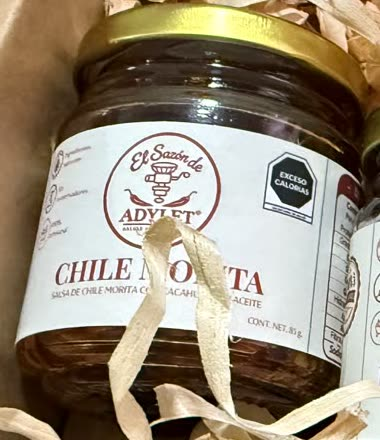
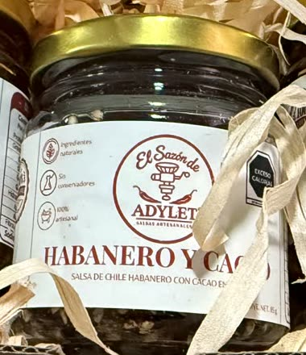
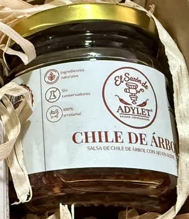
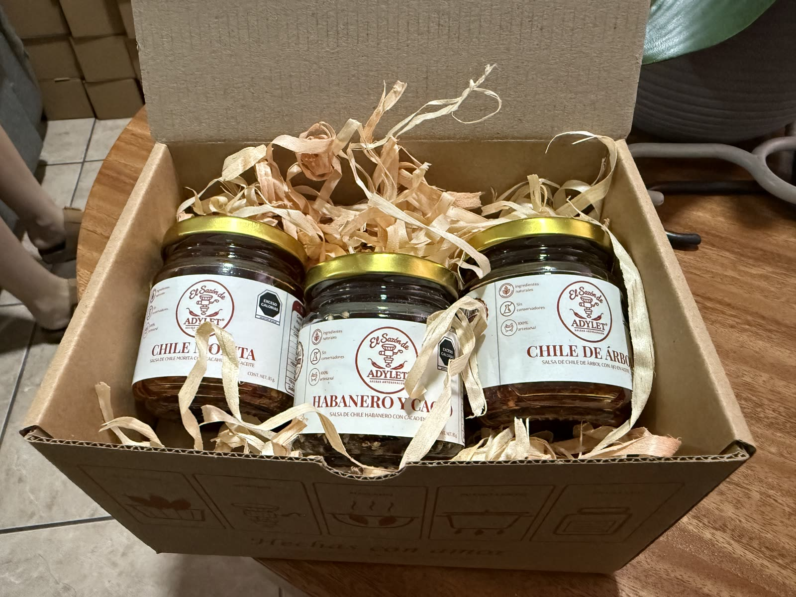
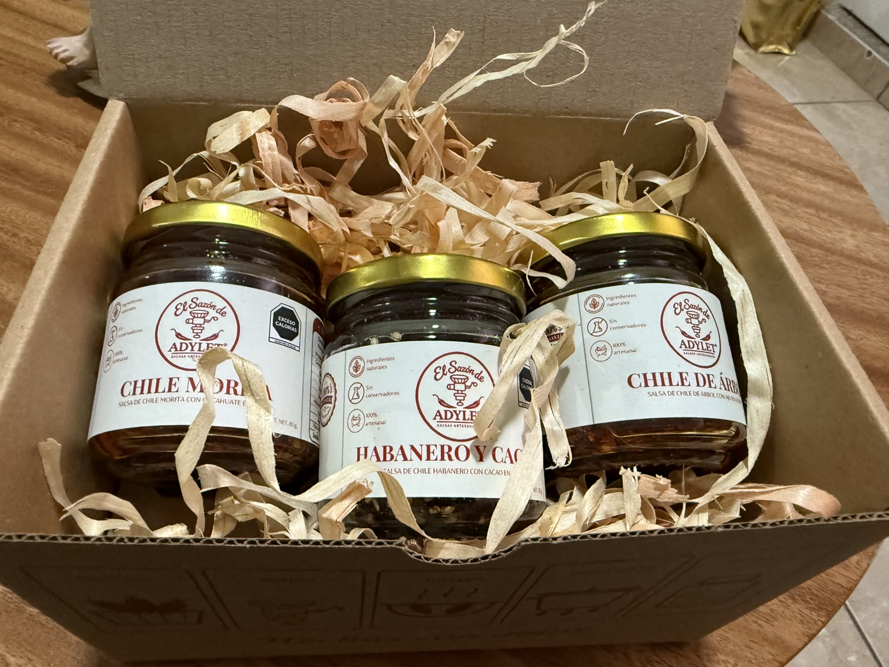
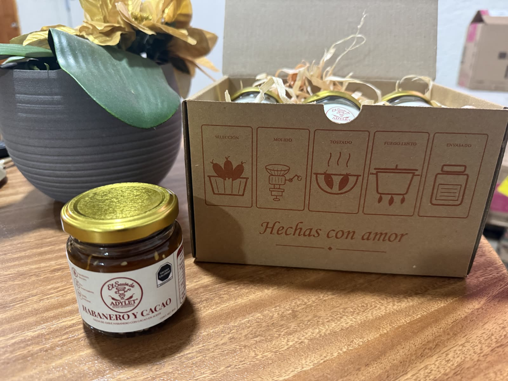

Chile Morita con Cacahuate
No pica
- Sabor
- Ahumado y dulce. Para toda la mesa, también para quien no come picante.
Contiene cacahuate y ajonjolí.
Tres salsas de chile en aceite de la Chef Ady. Las hace a mano y en lotes chicos, y las envasa, pesa y etiqueta una por una.
Cada una se hace por separado y en su propio lote. Ponla en tus tacos, tus huevos o tu botana favorita: el maridaje lo eliges tú.

Contiene cacahuate y ajonjolí.

Contiene ajonjolí.

Contiene ajonjolí.
Nada de líneas de producción. Pocos frascos cada vez, porque así se hace en una cocina.



«Quiero que las pruebes y te sientas como en casa.»
Pago: en efectivo o por transferencia. No emitimos factura.
Pedir por WhatsApp WhatsApp 33 1049 1482Responsable: Adriana Leticia García Ruiz Velasco (El Sazón de ADYLET), con domicilio en Miguel Galindo 1871, col. San Miguel de Mezquitán, C.P. 44260, Guadalajara, Jalisco.
Qué datos usamos: tu nombre, tu número de WhatsApp y la dirección de entrega que nos das al hacer un pedido.
Para qué: tomar y entregar tu pedido, confirmar el pago y avisarte de tu entrega. No los usamos para nada más, no los vendemos y solo los compartimos con el repartidor que lleva tu caja.
Tus derechos: puedes pedir ver, corregir o borrar tus datos, o dejar de recibir mensajes, escribiendo a adylet42@hotmail.com. Te contestamos en un máximo de 20 días hábiles.
Cambios: si este aviso cambia, lo publicaremos en esta misma página. Última actualización: noviembre de 2026.